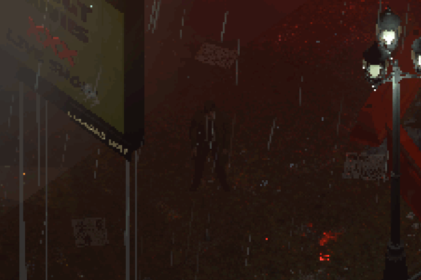
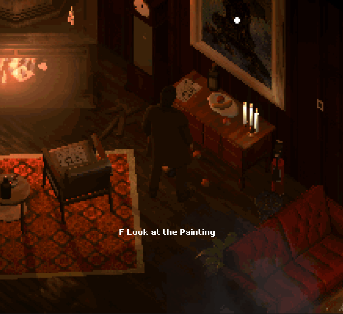
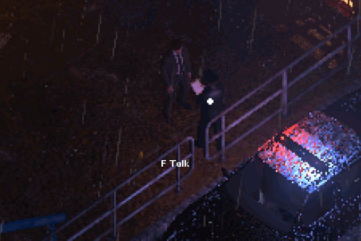
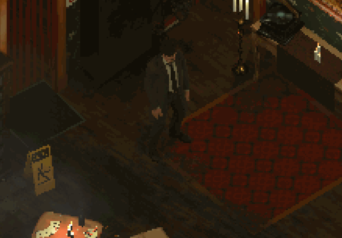
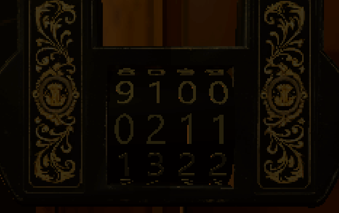
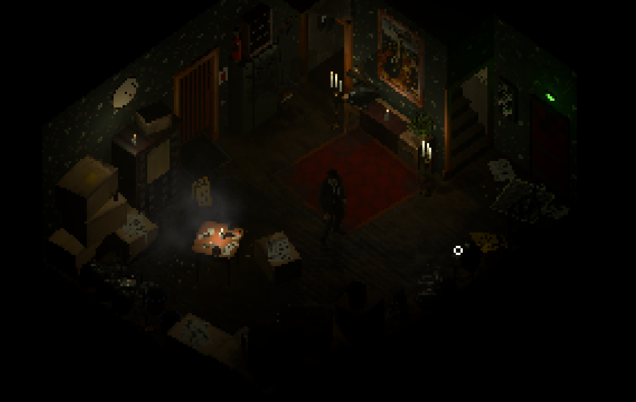
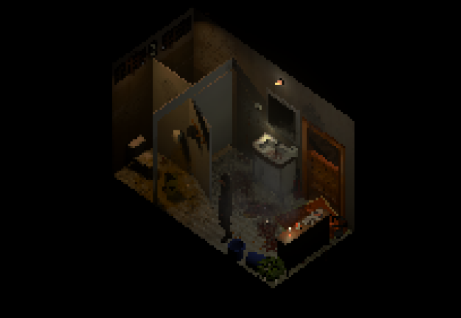
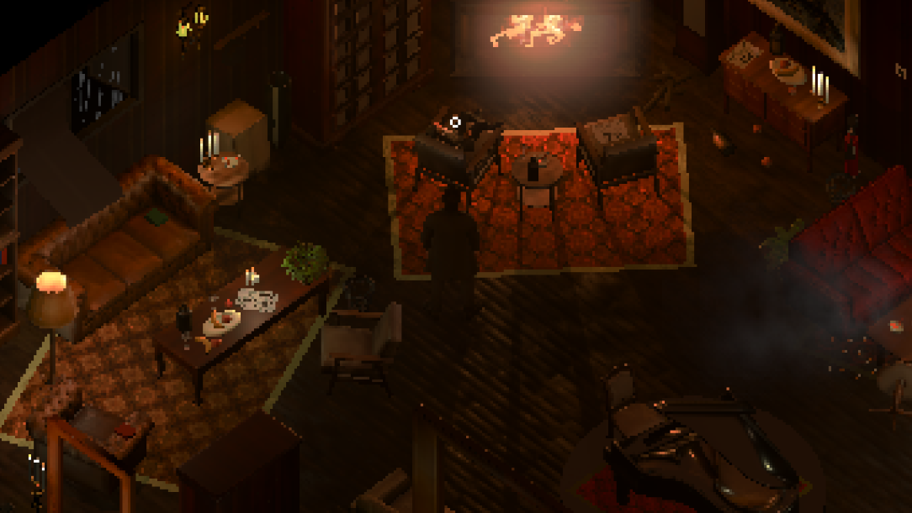

雨夜，越战末期的美国。
你在雨夜的一条小巷里突然醒来。
你不知道自己为什么会出现在这里，也无法完整地回忆起，在醒来之前究竟发生了什么。
一种超出一切控制的欲望正在悄然悸动。
特化的3D像素化效果
游戏中的整个 3D 世界都以精心设计的像素化风格呈现。

02 / 移动
移动中的像素世界
游戏采用固定正交斜俯视角，类似老《暗黑破坏神》、老《博德之门》等经典作品

03 / 室内
室内外两种渲染
室内外用不同策略渲染，使得室内的复古感更加强烈。

04 / 图形技术
复古像素与现代图形
保留像素3D世界空间复古感的同时，使用大量现代图形技术呈现出极致的视觉风格。

玩法&系统
探索—— 在俯视角摄像头下移动探索的诡异社区。

检视—— 近距离观察一幅画或一个物品，也许线索就在其中。


对话—— 一句句对话，挖掘那些被隐藏起来的秘密。


解谜—— 通过解谜，逐步推进让诡异街区的真面目浮出水面。


氛围—— 以越战末期的美国为时代背景，探索兼具鲜明年代特征与恐怖诡异氛围的场景。




